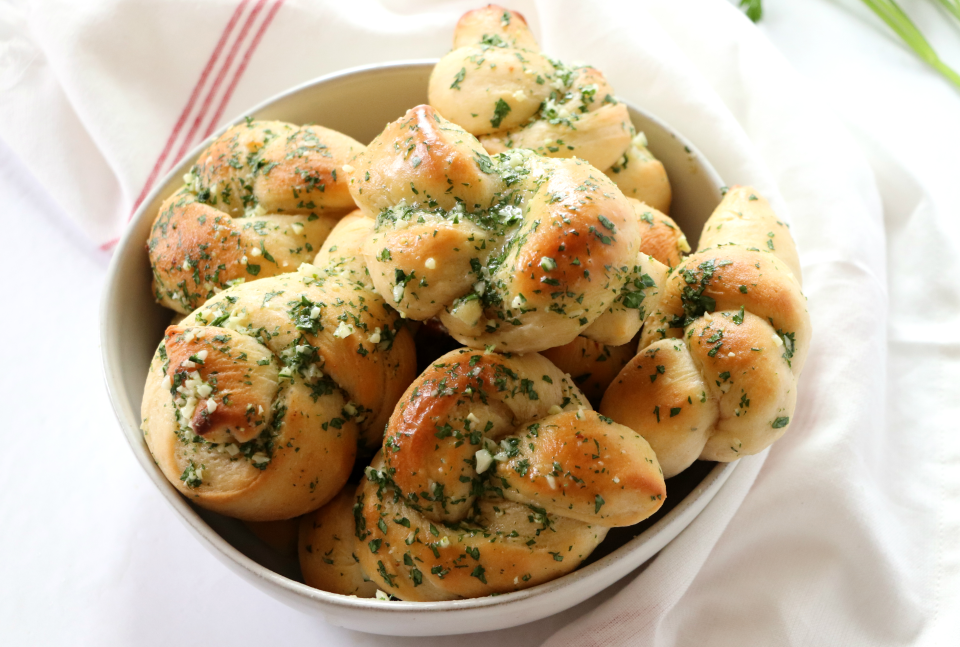

This recipe creates the perfect delightful crust: crispy on the outside yet soft and fluffy on the inside. Each knot is generously brushed with warm butter infused with the rich, savory scent of garlic and a hint of freshly chopped parsley. These garlic knots are irresistible and great for any occasion.

- Store bought or homemade pizza dough
- garlic
- butter
- parsley
1. Using your hands, roll the dough into 16 in long logs.
2. Using a knife, cut each log nto 1 inch strips.
3. Flatten each strip into an 8in long rope.
4. Tie the rope into a knot.
5. Let the knots rest for 30 minutes.
To make the butter glaze, combine melted butter, fresh minced garlic or garlic powder, Italian seasoning, and salt. After rising, brush the knots generously with the butter mixture. Preheat the oven to 400 F. Then, bake for 20-30 minutes or until golden brown on top.
Enjoy!
🥖 🧈 🧄